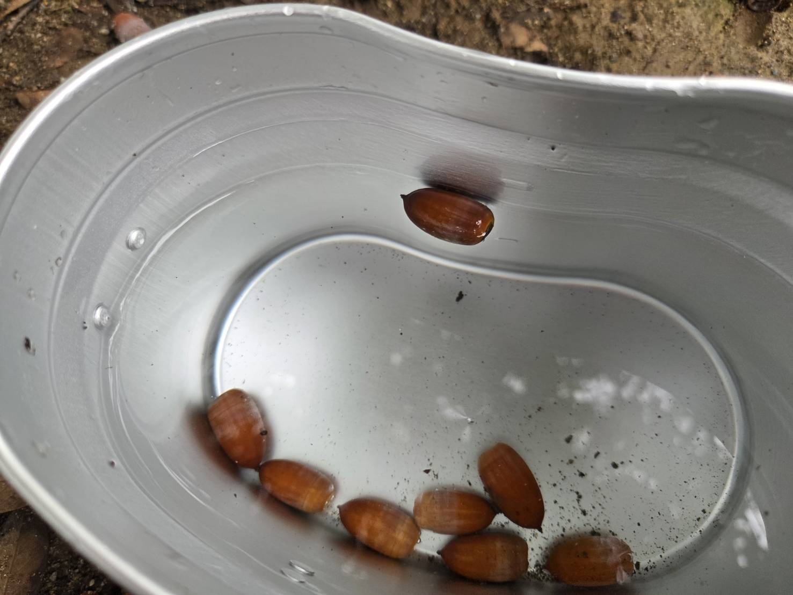
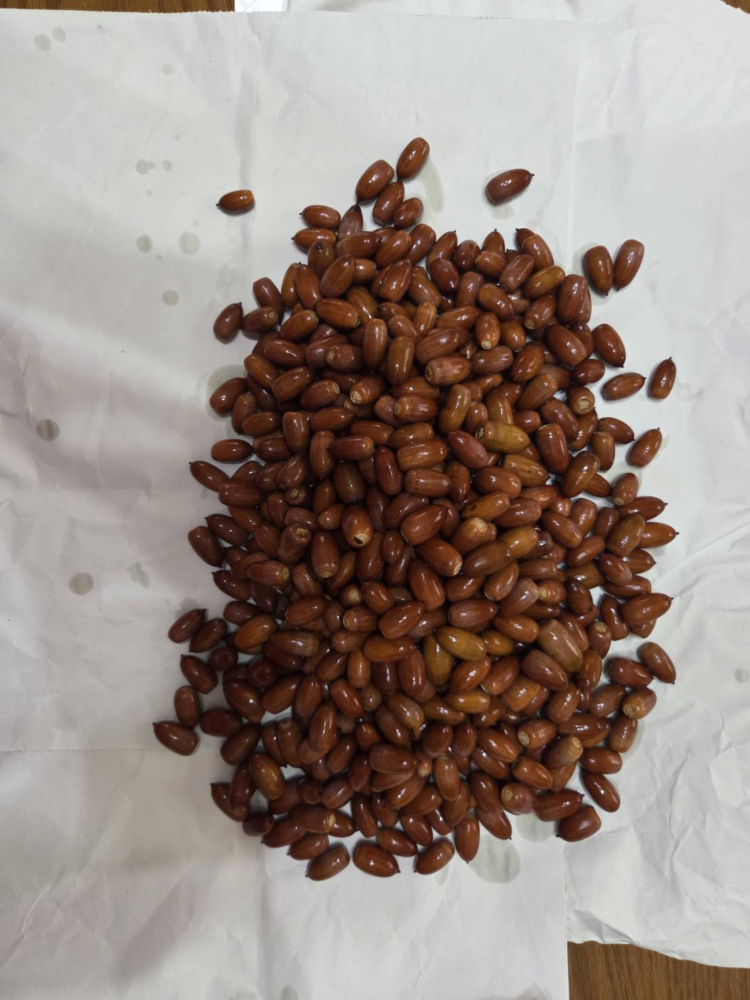
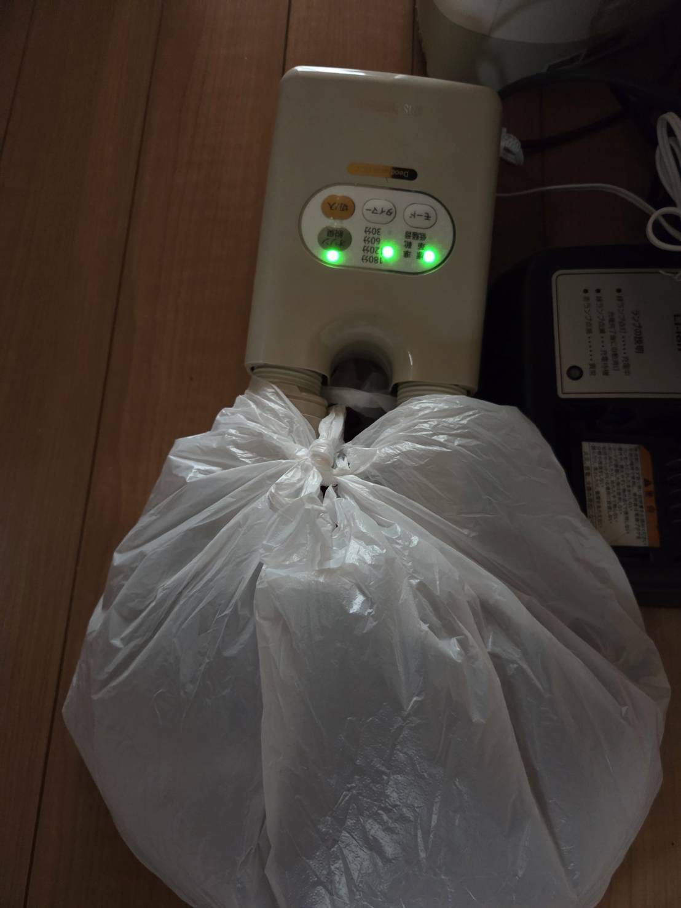
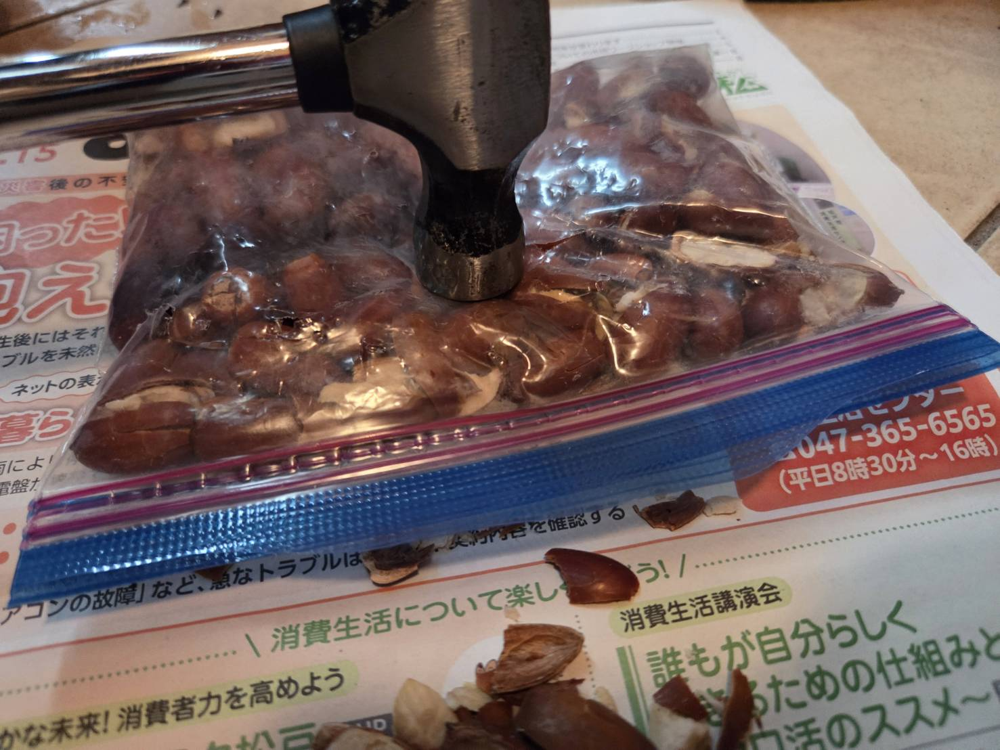
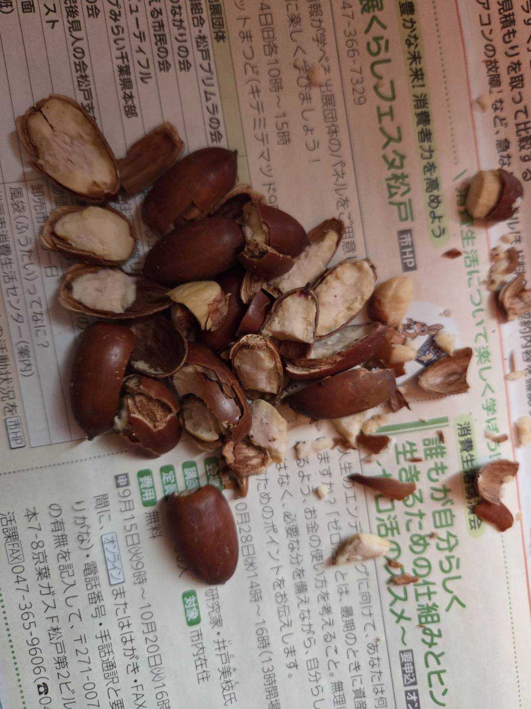
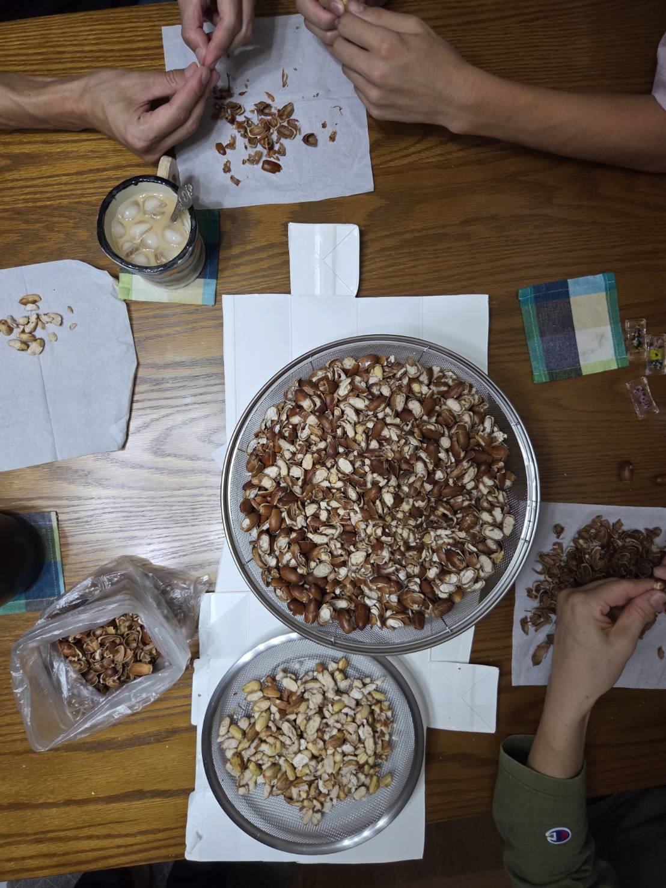
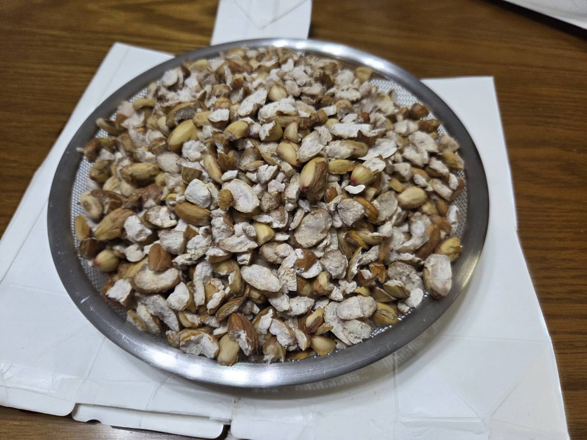
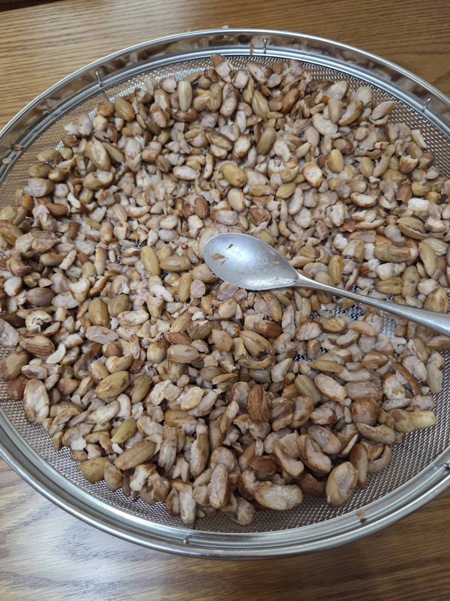

最終的に、どんぐりは近所の公園のマテバシイを持って帰ることにした。
もう、学校や部活、文化祭とは何の関係もなくなってしまったがあしからず。

少し採りすぎたかもしれない。
つい嬉しくなってしまったのだ。

乾燥機を使おう。
雨で濡れた靴はいつもこの乾燥機でパリパリに乾かしているからきっとどんぐりだって。
外で干す場合、木枯らしのビル街では、カラスなどから守るためざるなどで蓋をしよう。

乾燥させたどんぐりを袋の中で動かないくらい詰め込んで金槌で粉砕する。

きれいに割れた。
また、乾燥機にかける時間が長いものほど割りやすく、からと種が分離しやすくなるため余裕がある場合は内部も完全に乾燥させてから作業にのぞんだ方が良い。

途中で家族が手伝ってくれた。
やはり大人数でやると効率が一気に上がる。
縄文時代を追体験しているようだ。

全て種のみにした。
爪が痛い。

水気をよく切ってあとは乾燥させる
風通しのよい場所に置いておこう。